目录
本文是《统计学习方法》第10章的笔记，用一段167行的Python代码实现了隐马模型观测序列的生成、前向后向算法、Baum-Welch无监督训练、维特比算法。公式与代码相互对照，循序渐进。
HMM算是个特别常见的模型，早在我没有挖ML这个坑的时候，就已经在用HMM做基于字符序列标注的分词和词性标注了，甚至照葫芦画瓢实现了一个2阶的HMM分词器。但我的理解仅仅停留在“前向算法”“Viterbi”等层次。现在觉得靠各种应用向的论文、博客学习到的只是些皮毛，不如看一本专著来得全面。于是静下心来，从头到尾将这章认真看完，与自己原有的理解做一个对照，加深理解。 

隐马尔可夫模型的基本概念
隐马尔可夫模型的定义
隐马尔可夫模型是关于时序的概率模型，描述由一个隐藏的马尔可夫链随机生成不可观测的状态随机序列，再由各个状态生成一个观测而产生观测随机序列的过程。隐藏的马尔可夫链随机生成的状态的序列，称为状态序列（state sequence);每个状态生成一个观测，而由此产生的观测的随机序列，称为观测序列（observation sequence)。序列的每一个位置又可以看作是一个时刻。
什么叫隐马尔科夫链呢？简单说来，就是把时间线看做一条链，每个节点只取决于前N个节点。就像你打开朋友圈，发现你可以根据你的基友最近的几条状态猜测出接下来TA狗嘴里要吐什么东西一样。
接下来引入一些符号来表述这个定义——
设Q是所有可能的状态的集合，V是所有可能的观测的集合。
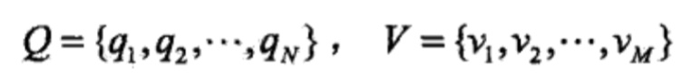
其中，N是可能的状态数，M是可能的观测数。
状态q是不可见的，观测v是可见的。应用到词性标注系统，词就是v，词性就是q。
I是长度为T的状态序列，O是对应的观测序列。
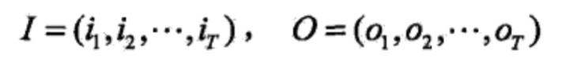
这可以想象为相当于给定了一个词（O）+词性（I）的训练集，于是我们手上有了一个可以用隐马尔可夫模型解决的实际问题。
定义A为状态转移概率矩阵：

其中，
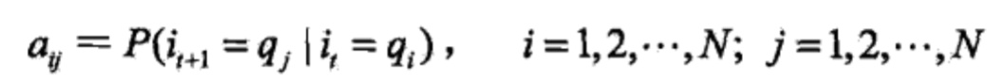
是在时刻t处于状态qi的条件下在时刻t+1转移到状态qj的概率。
这实际在表述一个一阶的HMM，所作的假设是每个状态只跟前一个状态有关。
B是观测概率矩阵:
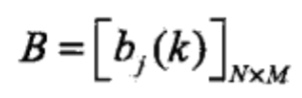
其中，
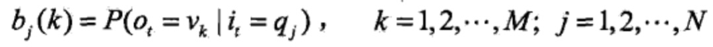
是在时刻t处于状态qj的条件下生成观测vk的概率（也就是所谓的“发射概率”）。
这实际上在作另一个假设，观测是由当前时刻的状态决定的，跟其他因素无关，这有点像Moore自动机。
π是初始状态概率向量：
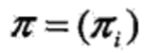
其中，
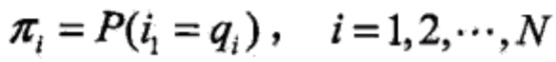
是时刻t=1处于状态qj的概率。
隐马尔可夫模型由初始状态概率向量π、状态转移概率矩阵A和观测概率矩阵B决定。π和A决定状态序列，B决定观测序列。因此，隐马尔可夫模型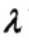可以用三元符号表示，即
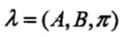
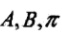称为隐马尔可夫模型的三要素。如果加上一个具体的状态集合Q和观测序列V，则构成了HMM的五元组，又是一个很有中国特色的名字吧。
状态转移概率矩阵A与初始状态概率向量π确定了隐藏的马尔可夫链，生成不可观测的状态序列。观测概率矩阵B确定了如何从状态生成观测，与状态序列综合确定了如何产生观测序列。
从定义可知，隐马尔可夫模型作了两个基本假设：
(1)齐次马尔可夫性假设，即假设隐藏的马尔可夫链在任意时刻t的状态只依赖于其前一时刻的状态，与其他时刻的状态及观测无关。
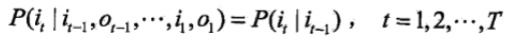
从上式左右两边的复杂程度来看，齐次马尔可夫性假设简化了许多计算。
(2)观测独立性假设，即假设任意时刻的观测只依赖于该时刻的马尔可夫链的状态，与其他观测及状态无关。
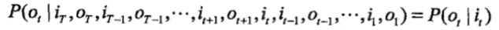
依然是一个简化运算的假设。
隐马尔可夫模型的实例
让我们抛开教材上拗口的红球白球与盒子模型吧，来看看这样一个来自wiki的经典的HMM例子：
你本是一个城乡结合部修电脑做网站的小码农，突然春风吹来全民创业。于是跟村头诊所的老王响应总理号召合伙创业去了，有什么好的创业点子呢？对了，现在不是很流行什么“大数据”么，那就搞个“医疗大数据”吧，虽然只是个乡镇诊所……但管它呢，投资人就好这口。
数据从哪儿来呢？你把老王，哦不，是王老板的出诊记录都翻了一遍，发现从这些记录来看，村子里的人只有两种病情：要么健康，要么发烧。但村民不确定自己到底是哪种状态，只能回答你感觉正常、头晕或冷。有位村民是诊所的常客，他的病历卡上完整地记录了这三天的身体特征(正常、头晕或冷)，他想利用王老板的“医疗大数据”得出这三天的诊断结果(健康或发烧)。
这时候王老板掐指一算，说其实感冒这种病，只跟病人前一天的病情有关，并且当天的病情决定当天的身体感觉。
于是你一拍大腿，天助我也，隐马尔可夫模型的两个基本假设都满足了，于是统计了一下病历卡上的数据，撸了这么一串Python代码：
- states = ('Healthy', 'Fever')
- observations = ('normal', 'cold', 'dizzy')
- start_probability = {'Healthy': 0.6, 'Fever': 0.4}
- transition_probability = {
- 'Healthy': {'Healthy': 0.7, 'Fever': 0.3},
- 'Fever': {'Healthy': 0.4, 'Fever': 0.6},
- }
- emission_probability = {
- 'Healthy': {'normal': 0.5, 'cold': 0.4, 'dizzy': 0.1},
- 'Fever': {'normal': 0.1, 'cold': 0.3, 'dizzy': 0.6},
- }
states代表病情，observations表示最近三天观察到的身体感受，start_probability代表病情的分布，transition_probability是病情到病情的转移概率，emission_probability则是病情表现出身体状况的发射概率。隐马的五元组都齐了，就差哪位老总投个几百万了。
HMM的Python定义
为了方便对照，降低公式造成的眩晕和昏睡效果，我决定改变以前的风格，不再把代码放到最后，而是直接将代码嵌入到理论讲解中，形成一份programmatic的tutorial。本文的代码主要参考 aehuynh 的Python实现，我在其基础上添加了simulate方法和一些utility，并且修改了他错误的Baum-Welch算法，开源在GitHub上：https://github.com/hankcs/hidden-markov-model 。
打开Python编辑器，有了前面的知识，我们就可以动手写一个一阶HMM模型的定义了：
- class HMM:
- """
- Order 1 Hidden Markov Model
- Attributes
- ----------
- A : numpy.ndarray
- State transition probability matrix
- B: numpy.ndarray
- Output emission probability matrix with shape(N, number of output types)
- pi: numpy.ndarray
- Initial state probablity vector
- """
- def __init__(self, A, B, pi):
- self.A = A
- self.B = B
- self.pi = pi
为了让该HMM实现接受王总的数据，我们必须写一些utility方法：
- def generate_index_map(lables):
- index_label = {}
- label_index = {}
- i = 0
- for l in lables:
- index_label[i] = l
- label_index[l] = i
- i += 1
- return label_index, index_label
- states_label_index, states_index_label = generate_index_map(states)
- observations_label_index, observations_index_label = generate_index_map(observations)
- def convert_observations_to_index(observations, label_index):
- list = []
- for o in observations:
- list.append(label_index[o])
- return list
- def convert_map_to_vector(map, label_index):
- v = np.empty(len(map), dtype=float)
- for e in map:
- v[label_index[e]] = map[e]
- return v
- def convert_map_to_matrix(map, label_index1, label_index2):
- m = np.empty((len(label_index1), len(label_index2)), dtype=float)
- for line in map:
- for col in map[line]:
- m[label_index1[line]][label_index2[col]] = map[line][col]
- return m
- A = convert_map_to_matrix(transition_probability, states_label_index, states_label_index)
- print A
- B = convert_map_to_matrix(emission_probability, states_label_index, observations_label_index)
- print B
- observations_index = convert_observations_to_index(observations, observations_label_index)
- pi = convert_map_to_vector(start_probability, states_label_index)
- print pi
- h = hmm.HMM(A, B, pi)
这些方法主要将源数据的map形式转为NumPy的矩阵形式：
- [[ 0.7 0.3]
- [ 0.4 0.6]]
- [[ 0.5 0.4 0.1]
- [ 0.1 0.3 0.6]]
- [ 0.6 0.4]
分别对应着A，B和pi。虽然该class目前什么都不能做，但是很快我们就能让它派上实际用场。
观测序列的生成过程
根据隐马尔可夫模型定义，可以将一个长度为T的观测序列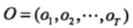的生成过程描述如下：
算法(观测序列的生成）
输入：隐马尔可夫模型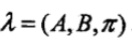，观测序列长度
输出：观测序列。
(1)按照初始状态分布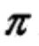产生状态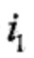
(2)令t=1
(3)按照状态的观测概率分布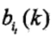生成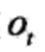
(4)按照状态的状态转移概率分布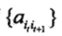产生状态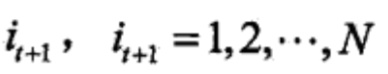
令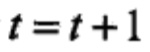；如果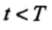则转步(3)；否则，终止。
观测序列生成Python实现
为什么要生成观测序列呢？虽然我很想剧透并没有什么卵用，但王老板说他基于三年乡镇诊所病历卡的“医疗大数据库”里面并没有足够的数据给你跑什么算法。你只好自己动手，写算法生成一些了：
- def simulate(self, T):
- def draw_from(probs):
- return np.where(np.random.multinomial(1,probs) == 1)[0][0]
- observations = np.zeros(T, dtype=int)
- states = np.zeros(T, dtype=int)
- states[0] = draw_from(self.pi)
- observations[0] = draw_from(self.B[states[0],:])
- for t in range(1, T):
- states[t] = draw_from(self.A[states[t-1],:])
- observations[t] = draw_from(self.B[states[t],:])
- return observations,states
这串代码很小巧玲珑，draw_from接受一个概率分布，然后生成该分布下的一个样本。算法首先初始化两个长度为T的向量，接着按照初始状态分布pi生成第一个状态：
- states[0] = draw_from(self.pi)
这还没完，有了状态，我们还可以取出状态对应的观测的概率分布，生成一个观测：
- observations[0] = draw_from(self.B[states[0],:])
接下来一直到t，我们都是按前一个状态取出状态转移概率分布，生成状态，再取出状态对应的观测的概率分布，生成一个观测。重复这个步骤，就得到了长度为T的观测和状态向量了。
具体的调用方法是：
- observations_data, states_data = h.simulate(10)
- print observations_data
- print states_data
输出：
- [1 0 0 1 0 1 0 2 1 2]
- [0 0 0 0 0 0 0 0 1 0]
这里直接用了下标表示，如果要糊弄投资人的话，还请按照index_label_map转换为相应的label。
隐马尔可夫模型的3个基本问題
隐马尔可夫模型有3个基本问题：
(1) 概率计算问题。给定模型和观测序列,计算在模型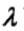下观测序列O出现的概率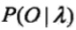。
(2) 学习问题。己知观测序列,估计模型参数，使得在该模型下观测序列概率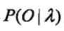最大。即用极大似然估计的方法估计参数。
(3) 预测问题，也称为解码（decoding)问题。已知模型和观测序列，求对给定观测序列条件概率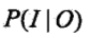最大的状态序列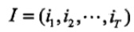。即给定观测序列，求最有可能的对应的状态序列。
下面各节将逐一介绍这些基本问题的解法。
概率计算算法
这节介绍计算观测序列概率的前向（forward)与后向（backward)算法，以及概念上可行但计算上不可行的直接计算法（枚举）。前向后向算法无非就是求第一个状态的前向概率或最后一个状态的后向概率，然后向后或向前递推即可。
直接计算法
给定模型，求给定长度为T的观测序列的概率，直接计算法的思路是枚举所有的长度T的状态序列，计算该状态序列与观测序列的联合概率（隐状态发射到观测），对所有的枚举项求和即可。在状态种类为N的情况下，一共有N^T种排列组合，每种组合计算联合概率的计算量为T，总的复杂度为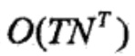，并不可取。
前向算法
首先定义前向概率。
定义(前向概率）给定隐马尔可夫模型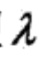，定义到时刻t为止的观测序列为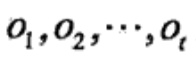且状态为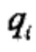的概率为前向概率，记作
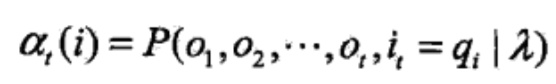
可以递推地求得前向概率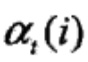及观测序列概率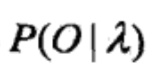。
算法(观测序列概率的前向算法）
输入：隐马尔可夫模型，观测序列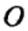;
输出：观测序列概率。
(1)初值
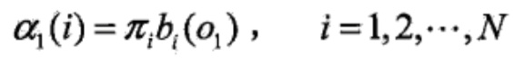
前向概率的定义中一共限定了两个条件，一是到当前为止的观测序列，另一个是当前的状态。所以初值的计算也有两项（观测和状态），一项是初始状态概率，另一项是发射到当前观测的概率。
(2)递推对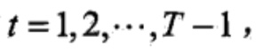
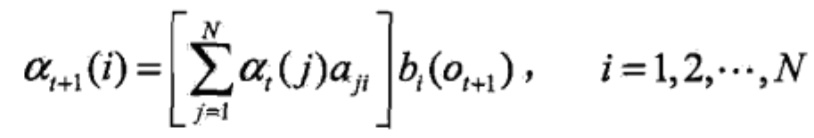
每次递推同样由两部分构成，大括号中是当前状态为i且观测序列的前t个符合要求的概率，括号外的是状态i发射观测t+1的概率。
(3)终止
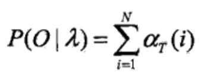
由于到了时间T，一共有N种状态发射了最后那个观测，所以最终的结果要将这些概率加起来。
由于每次递推都是在前一次的基础上进行的，所以降低了复杂度。准确来说，其计算过程如下图所示：
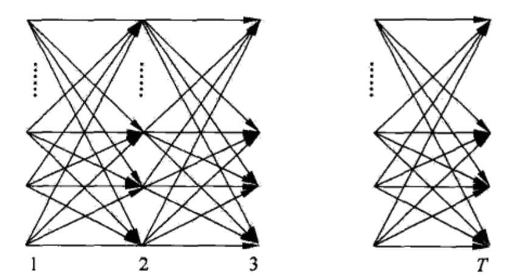
下方标号表示时间节点，每个时间点都有N种状态，所以相邻两个时间之间的递推消耗N^2次计算。而每次递推都是在前一次的基础上做的，所以只需累加O(T)次，所以总体复杂度是O(T)个N^2，即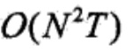。
前向算法Python实现
- def _forward(self, obs_seq):
- N = self.A.shape[0]
- T = len(obs_seq)
- F = np.zeros((N,T))
- F[:,0] = self.pi * self.B[:, obs_seq[0]]
- for t in range(1, T):
- for n in range(N):
- F[n,t] = np.dot(F[:,t-1], (self.A[:,n])) * self.B[n, obs_seq[t]]
- return F
代码和伪码的对应关系还是很清晰的，F对应alpha，HMM的三个参数与伪码一致。
后向算法
定义(后向概率）给定隐马尔可夫模型,定义在时刻t状态为的条件下，从t+1到T的部分观测序列为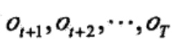的概率为后向概率，记作
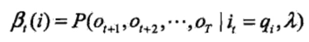
可以用递推的方法求得后向概率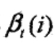及观测序列概率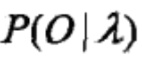。
算法(观测序列概率的后向算法）
输入：隐马尔可夫模型,观测序列:
输出：观测序列概率
(1)初值
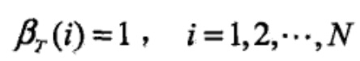
根据定义，从T+1到T的部分观测序列其实不存在，所以硬性规定这个值是1。
(2)对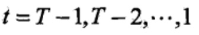

aij表示状态i转移到j的概率，bj表示发射Ot+1，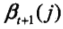表示j后面的序列对应的后向概率。
(3)
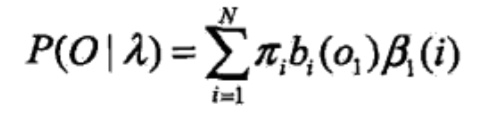
最后的求和是因为，在第一个时间点上有N种后向概率都能输出从2到T的观测序列，所以乘上输出O1的概率后求和得到最终结果。
后向算法的Python实现
- def _backward(self, obs_seq):
- N = self.A.shape[0]
- T = len(obs_seq)
- X = np.zeros((N,T))
- X[:,-1:] = 1
- for t in reversed(range(T-1)):
- for n in range(N):
- X[n,t] = np.sum(X[:,t+1] * self.A[n,:] * self.B[:, obs_seq[t+1]])
- return X
学习算法
隐马尔可夫模型的学习，根据训练数据是包括观测序列和对应的状态序列还是只有观测序列，可以分别由监督学习与非监督学习实现。本节首先介绍监督学习算法，而后介绍非监督学习算法——Baum-Weich算法（也就是EM算法)。
监督学习方法
假设已给训练数据包含S个长度相同的观测序列和对应的状态序列 ，那么可以利用极大似然估计法来估计隐马尔可夫模型的参数。具体方法如下。
，那么可以利用极大似然估计法来估计隐马尔可夫模型的参数。具体方法如下。
1.转移概率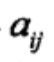的估计
设样本中时刻t处于状态i时刻t+1转移到状态j的频数为，那么状态转移概率的估计是
很简单的最大似然估计。
2. 观测概率的估计
设样本中状态为j并观测为k的频数是，那么状态为j观测为k的概率的估计是
3. 初始状态概率的估计为S个样本中初始状态为的频率。
由于监督学习需要使用训练数据，而人工标注训练数据往往代价很高，有时就会利用非监督学习的方法。
Baum-Welch算法
假设给定训练数据只包含S个长度为T的观测序列而没有对应的状态序列，目标是学习隐马尔可夫模型的参数。我们将观测序列数据看作观测数据O，状态序列数据看作不可观测的隐数据I，那么隐马尔可夫模型事实上是一个含有隐变量的概率模型
它的参数学习可以由EM算法实现。
1 确定完全数据的对数似然函数
所有观测数据写成,所有隐数据写成，完全数据是。完全数据的对数似然函数是。
2 EM算法的E步：求Q函数

其中，是隐马尔可夫模型参数的当前估计值，是要极大化的隐马尔可夫模型参数。（Q函数的标准定义是：，式子内部其实是条件概率，其中的对应；其与无关，所以省略掉了。）
这个式子从左到右依次是初始概率、发射概率、转移概率、发射概率……
于是函数可以写成：
式中求和都是对所有训练数据的序列总长度T进行的。这个式子是将代入 后，将初始概率、转移概率、发射概率这三部分乘积的对数拆分为对数之和，所以有三项。
后，将初始概率、转移概率、发射概率这三部分乘积的对数拆分为对数之和，所以有三项。
3 EM算法的M步:极大化Q函数求模型参数，由于要极大化的参数在Q函数表达式中单独地出现在3个项中，所以只需对各项分别极大化。
第1项可以写成：
注意到满足约束条件利用拉格朗日乘子法，写出拉格朗日函数：
对其求偏导数并令结果为0
得到
这个求导是很简单的，求和项中非i的项对πi求导都是0，logπ的导数是1/π，γ那边求导就剩下πi自己对自己求导，也就是γ。等式两边同时乘以πi就得到了上式。
对i求和得到γ：
代入中得到：
第2项可以写成：
类似第1项，应用具有约束条件的拉格朗日乘子法可以求出
第3项为:
同样用拉格朗日乘子法，约束条件是。注意，只有在对时对的偏导数才不为0,以表示。求得
Baum-Welch模型参数估计公式
将这三个式子中的各概率分别简写如下：
则可将相应的公式写成：
这三个表达式就是Baum-Welch算法（Baum-Welch algorithm)，它是EM算法在隐马尔可夫模型学习中的具体实现，由Baum和Welch提出。
算法 (Baum-Welch算法）
输入：观测数据
输出：隐马尔可夫模型参数。
(1)初始化
对,选取，得到模型。
(2)递推。对

右端各值按观测和模型计算。
(3)终止。得到模型参数。
Baum-Welch算法的Python实现
- def baum_welch_train(self, observations, criterion=0.05):
- n_states = self.A.shape[0]
- n_samples = len(observations)
- done = False
- while not done:
- # alpha_t(i) = P(O_1 O_2 ... O_t, q_t = S_i | hmm)
- # Initialize alpha
- alpha = self._forward(observations)
- # beta_t(i) = P(O_t+1 O_t+2 ... O_T | q_t = S_i , hmm)
- # Initialize beta
- beta = self._backward(observations)
- xi = np.zeros((n_states,n_states,n_samples-1))
- for t in range(n_samples-1):
- denom = np.dot(np.dot(alpha[:,t].T, self.A) * self.B[:,observations[t+1]].T, beta[:,t+1])
- for i in range(n_states):
- numer = alpha[i,t] * self.A[i,:] * self.B[:,observations[t+1]].T * beta[:,t+1].T
- xi[i,:,t] = numer / denom
- # gamma_t(i) = P(q_t = S_i | O, hmm)
- gamma = np.sum(xi,axis=1)
- # Need final gamma element for new B
- prod = (alpha[:,n_samples-1] * beta[:,n_samples-1]).reshape((-1,1))
- gamma = np.hstack((gamma, prod / np.sum(prod))) #append one more to gamma!!!
- newpi = gamma[:,0]
- newA = np.sum(xi,2) / np.sum(gamma[:,:-1],axis=1).reshape((-1,1))
- newB = np.copy(self.B)
- num_levels = self.B.shape[1]
- sumgamma = np.sum(gamma,axis=1)
- for lev in range(num_levels):
- mask = observations == lev
- newB[:,lev] = np.sum(gamma[:,mask],axis=1) / sumgamma
- if np.max(abs(self.pi - newpi)) < criterion and \
- np.max(abs(self.A - newA)) < criterion and \
- np.max(abs(self.B - newB)) < criterion:
- done = 1
- self.A[:],self.B[:],self.pi[:] = newA,newB,newpi
代码有点长，一段一段地看。
先拿到前后向概率：
- alpha = self._forward(observations)
- beta = self._backward(observations)
然后计算：
- xi = np.zeros((n_states,n_states,n_samples-1))
- for t in range(n_samples-1):
- denom = np.dot(np.dot(alpha[:,t].T, self.A) * self.B[:,observations[t+1]].T, beta[:,t+1])
- for i in range(n_states):
- numer = alpha[i,t] * self.A[i,:] * self.B[:,observations[t+1]].T * beta[:,t+1].T
- xi[i,:,t] = numer / denom
注意xi的下标t少了一个，这是因为对于t=T，没法用t+1去定位后向概率。所以这一个时刻是这么计算的：
- # gamma_t(i) = P(q_t = S_i | O, hmm)
- gamma = np.sum(xi,axis=1)
- # Need final gamma element for new B
- prod = (alpha[:,n_samples-1] * beta[:,n_samples-1]).reshape((-1,1))
- gamma = np.hstack((gamma, prod / np.sum(prod))) #append one more to gamma!!!
gamma有了，于是取下标1得到新的pi：
- newpi = gamma[:,0]
xi求和除以gamma求和得到新的A：
- newA = np.sum(xi,2) / np.sum(gamma[:,:-1],axis=1).reshape((-1,1))
利用下式得到新的B：
- num_levels = self.B.shape[1]
- sumgamma = np.sum(gamma,axis=1)
- for lev in range(num_levels):
- mask = observations == lev
- newB[:,lev] = np.sum(gamma[:,mask],axis=1) / sumgamma
接着检查是否满足终止阈值，否则继续下一轮训练。
回到诊所的例子，我们可以用这样一串代码完成Baum-Welch算法的训练，并且评估其准确率：
- # run a baum_welch_train
- observations_data, states_data = h.simulate(100)
- # print observations_data
- # print states_data
- guess = hmm.HMM(np.array([[0.5, 0.5],
- [0.5, 0.5]]),
- np.array([[0.3, 0.3, 0.3],
- [0.3, 0.3, 0.3]]),
- np.array([0.5, 0.5])
- )
- guess.baum_welch_train(observations_data)
- states_out = guess.state_path(observations_data)[1]
- p = 0.0
- for s in states_data:
- if next(states_out) == s: p += 1
- print p / len(states_data)
输出：
- 0.58
视simulate出来的随机数据不同，准确率在40%-70%之间波动。这其实说明对于这个例子，无监督学习并不靠谱，只能全靠创业团队的PPT了。
另外，由于这是一份来自colostate大学的教学代码，全部运算都是浮点数乘法，没有取对数，所以在数据量较大的时候可能发生除零错误。
预测算法
下面介绍隐马尔可夫模型预测的两种算法：近似算法与维特比算法（Viterbi algorithm)。
近似算法
近似算法的想法是，在每个时刻t选择在该时刻最有可能出现的状态 ，从而得到一个状态序列，将它作为预测的结果。
，从而得到一个状态序列，将它作为预测的结果。
给定隐马尔可夫模型和观测序列，在时刻t处于状态的概率是
在每一时刻t最优可能的状态 是
是
从而得到状态序列。
近似算法的优点是计算简单，其缺点是不能保证预测的状态序列整体是最有可能的状态序列，因为预测的状态序列可能有实际不发生的部分。事实上，上述方法得到的状态序列中有可能存在转移概率为0的相邻状态，即对某些时。尽管如此，近似算法仍然是有用的（没看出来有什么用 ）。
）。
维特比算法
维特比算法实际是用动态规划解隐马尔可夫模型预测问题，即用动态规划(dynamic programming)求概率最大路径（最优路径）。这时一条路径对应着一个状态序列。
根据动态规划原理，最优路径具有这样的特性：如果最优路径在时刻t通过结点 ,那么这一路径从结点
,那么这一路径从结点 到终点
到终点 的部分路径，对于从
的部分路径，对于从 到
到 的所有可能的部分路径来说，必须是最优的。因为假如不是这样，那么从
的所有可能的部分路径来说，必须是最优的。因为假如不是这样，那么从 到
到 就有另一条更好的部分路径存在，如果把它和从到达
就有另一条更好的部分路径存在，如果把它和从到达 的部分路径连接起来，就会形成一条比原来的路径更优的路径，这是矛盾的。依据这一原理，我们只需从时刻t=l开始，递推地计算在时刻t状态为i的各条部分路径的最大概率，直至得到时刻状态为i的各条路径的最大概率。时刻的最大概率即为最优路径的概率,最优路径的终结点
的部分路径连接起来，就会形成一条比原来的路径更优的路径，这是矛盾的。依据这一原理，我们只需从时刻t=l开始，递推地计算在时刻t状态为i的各条部分路径的最大概率，直至得到时刻状态为i的各条路径的最大概率。时刻的最大概率即为最优路径的概率,最优路径的终结点 也同时得到。之后，为了找出最优路径的各个结点，从终结点
也同时得到。之后，为了找出最优路径的各个结点，从终结点 开始，由后向前逐步求得结点,得到最优路径这就是维特比算法。
开始，由后向前逐步求得结点,得到最优路径这就是维特比算法。
首先导入两个变量和。定义在时刻t状态为i的所有单个路径,中概率最大值为
由定义可得变量的递推公式：
定义在时刻t状态为i的所有单个路径中概率最大的路径的第t-1个结点为
下面介绍维特比算法。
算法(维特比算法）
输入：模型和观测;
输出：最优路径。
⑴初始化
(2)递推。对
(3)终止
(4)最优路径回溯。对
求得最优路径。
维特比算法Python实现
不管是监督学习，还是非监督学习，我们反正都训练出了一个HMM模型。现在诊所来了一位病人，他最近三天的病状是：
- observations = ('normal', 'cold', 'dizzy')
如何用Viterbi算法计算他的病情以及相应的概率呢？
- def viterbi(self, obs_seq):
- """
- Returns
- -------
- V : numpy.ndarray
- V [s][t] = Maximum probability of an observation sequence ending
- at time 't' with final state 's'
- prev : numpy.ndarray
- Contains a pointer to the previous state at t-1 that maximizes
- V[state][t]
- """
- N = self.A.shape[0]
- T = len(obs_seq)
- prev = np.zeros((T - 1, N), dtype=int)
- # DP matrix containing max likelihood of state at a given time
- V = np.zeros((N, T))
- V[:,0] = self.pi * self.B[:,obs_seq[0]]
- for t in range(1, T):
- for n in range(N):
- seq_probs = V[:,t-1] * self.A[:,n] * self.B[n, obs_seq[t]]
- prev[t-1,n] = np.argmax(seq_probs)
- V[n,t] = np.max(seq_probs)
- return V, prev
这应该是目前最简洁最优雅的实现了，调用方法如下：
- h = hmm.HMM(A, B, pi)
- V, p = h.viterbi(observations_index)
- print " " * 7, " ".join(("%10s" % observations_index_label[i]) for i in observations_index)
- for s in range(0, 2):
- print "%7s: " % states_index_label[s] + " ".join("%10s" % ("%f" % v) for v in V[s])
- print '\nThe most possible states and probability are:'
- p, ss = h.state_path(observations_index)
- for s in ss:
- print states_index_label[s],
- print p
输出结果如下：
- normal cold dizzy
- Healthy: 0.300000 0.084000 0.005880
- Fever: 0.040000 0.027000 0.015120
- The most possible states and probability are
- Healthy Healthy Fever 0.01512
对比维基百科的结果：
- 0 1 2
- Healthy: 0.30000 0.08400 0.005884
- Fever: 0.04000 0.02700 0.015125
- The steps of states are Healthy Healthy Fever with highest probability of 0.01512
两者是完全一致的，对算法有疑问的可以参考这段动画，将代码单步一遍，什么都明白了：
我还用Java实现过Viterbi算法：https://github.com/hankcs/Viterbi 。该Java实现同样很简洁，并且附带了上述诊所和天气预测的例子，欢迎Java用户查阅。
Reference
《统计学习方法》
https://en.wikipedia.org/wiki/Viterbi_algorithm#Example
https://github.com/aehuynh/hidden-markov-model
http://www.cs.colostate.edu/~anderson/cs440/index.html/doku.php?id=notes:hmm2
终于等到更新鸟